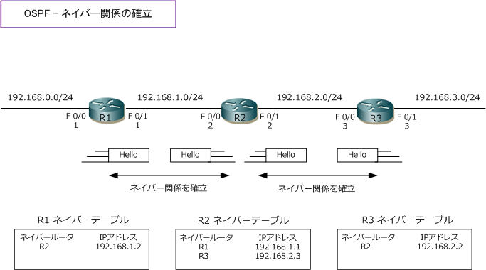
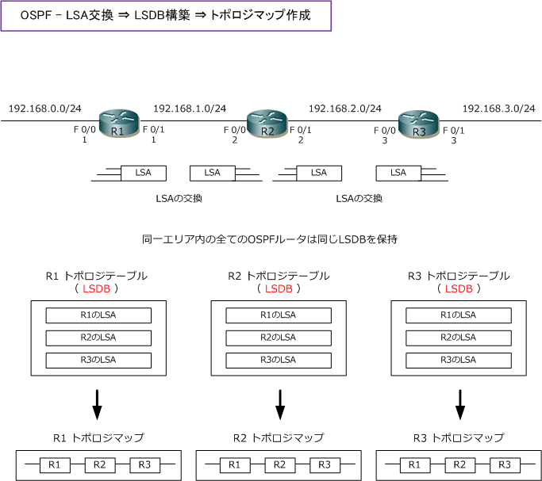
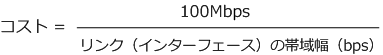
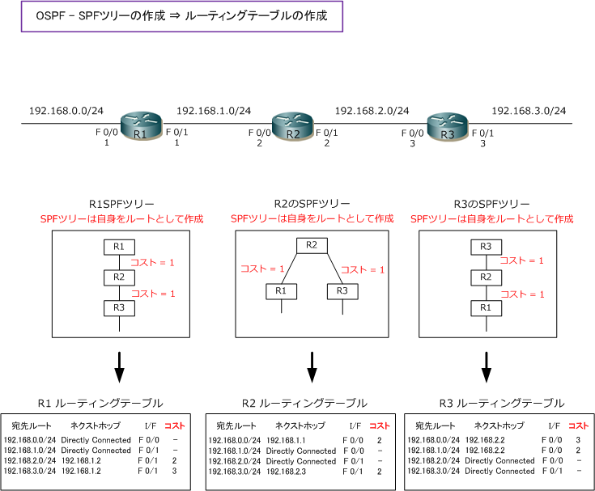
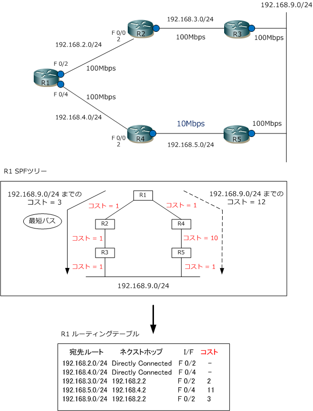
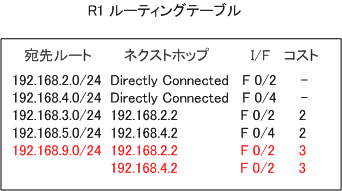

OSPF
OSPFとは
OSPF （Open Shortest Path First）はリンクステート型ルーティングプロトコル。リンクステート型の ルーティングプロトコルの特徴は、先に解説したリンクステート型ルーティングプロトコルの通りですが この解説にOSPFを当てはめて詳細に解説します。OSPFには、IPv4対応の OSPFv2（ バージョン2 ）と IPv6対応の OSPFv3（ バージョン3 ）の2種類ありますが、一般的にOSPFといえばOSPFv2を指します。
OSPF - 1. Helloパケットによるネイバー関係の確立
OSPFでは隣接ルータとHelloパケットを交換することでネイバー関係を確立します。このHelloパケットは マルチキャスト（224.0.0.5）で送信しています。ネイバーを認識するとネイバーテーブルに格納されます。 ネイバー確立後、ネイバー関係を維持する（存在を確認する）ために定期的にHelloパケットを送信します。

OSPF - 2. LSA交換 ⇒ LSDB構築 ⇒ トポロジマップ作成
ネイバー関係の確立後、OSPFルータは自身の持つリンク情報（インターフェース情報）をネイバールータに LSA（Link State Advertisement）として送信し合います。受信したLSAはトポロジテーブルに格納します。 そして受信したLSAは、別のネイバールータに送信して、最終的にはネットワーク全体でLSAが通知されます。
OSPFではトポロジテーブルのことをLSDB（ Link State Database ）と呼びます。LSDBは同じエリア内の 全てのルータで同じLSDBを保持します。エリアとはLSAを交換する範囲を示す論理的なグループのことです。 そしてOSPFではLSDBに格納されたLSAを組み合わせてネットワーク全体の地図（トポロジマップ）を作成。

OSPF - 3. SPFツリーの作成 ⇒ ルーティングテーブルの作成
トポロジマップを作成したOSPFルータでは、次にSPFアルゴリズム（ダイクストラ）を実行し階層ツリーの SPFツリーを作成します。SPFは宛先ネットワークに対する最短パスを計算するアルゴリズムです。SPFでは、 各ルータは自身をルートとして頂点に位置付け、宛先ネットワークへのコスト合計値を計算します。コストは リンク（インターフェース）の帯域幅を基に自動的に算出されます。各リンク毎に手動で設定することも可能。

つまり、10Mbpsのコスト値は 10、100Mbpsのコスト値は 1、1Gbpsのコスト値は、計算上0.1ですが 1 。 下図の場合、全リンクが1Gbpsなので各リンクのコスト値は 1。例えばR1から「192.168.3.0/24」宛へは R1 ⇔ R2間のコスト 1、R2 ⇔ R3間のコスト 1、R3 ⇔ 192.168.3.0/24間のコスト 1 、の合計値の 3 です。

コスト値の計算について、詳細に確認します。下図の場合、R1から「192.168.9.0/24」のネットワークへ R2経由とR4経由の2つのパスがありますが、R2経由の合計コストは 3、R4経由の合計コストは 12 になる ことから、最短パスはR2経由となりルーティングテーブルは下図の通りになります。なお合計コストの値は その宛先ネットワークへパケットを送出するインターフェースに割り当てられたコストを加算し算出されます。 ※ R1から宛先となる「192.168.9.0/24」へは、下図ルータの青○マークの I/F に割り当てられたコストを加算して算出されます。

R4 ⇔ R5間も100Mbpsリンクでコストが 1 である場合、R1から「192.168.9.0/24」のネットワークへは R2経由でもR4経由でも合計コストが 3 となります。OSPFでは等コストロードバランシング機能をサポート していることから、R2経由の経路情報、R4経由の経路情報の両方がルーティングテーブルに作成されます。 その場合、その宛先トラフィックをR1が受信するとこれら複数のルートに分散してパケットを転送されます。
